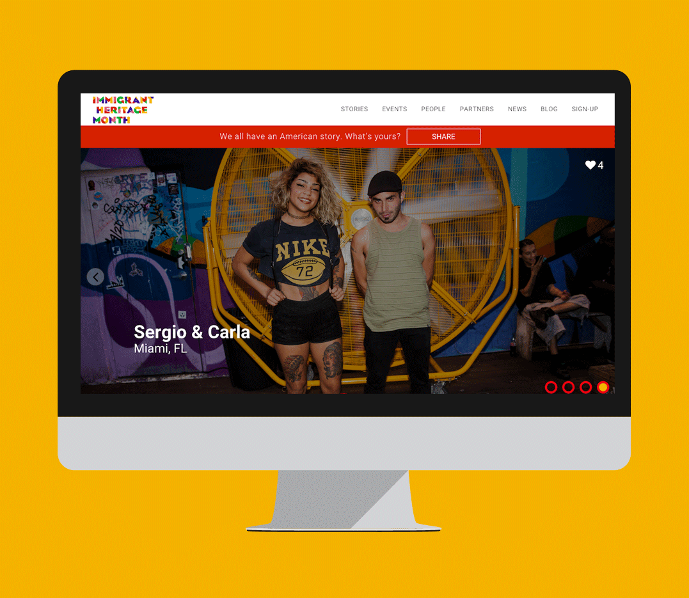
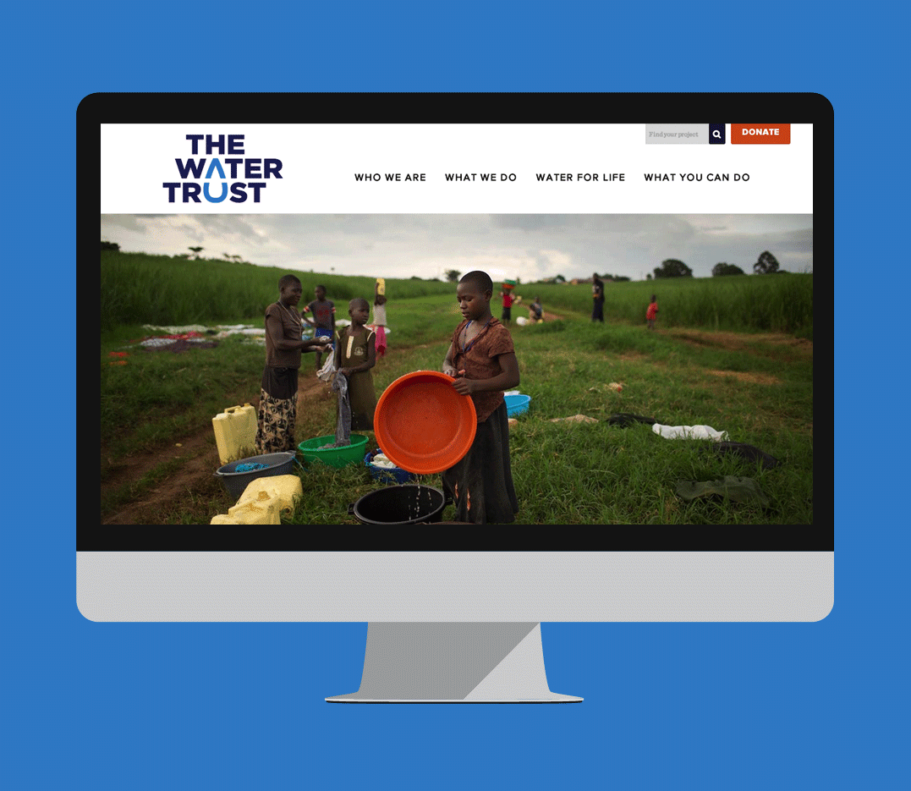
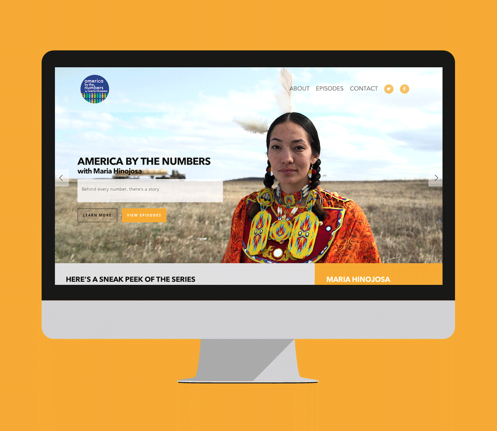
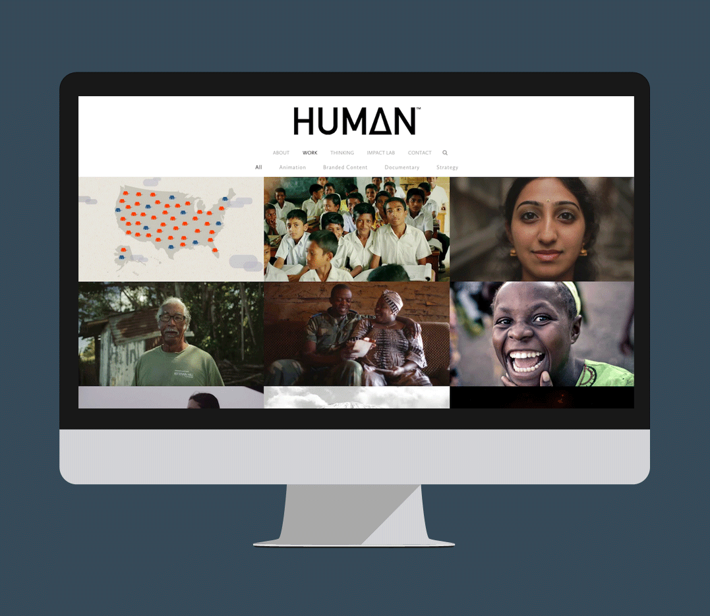
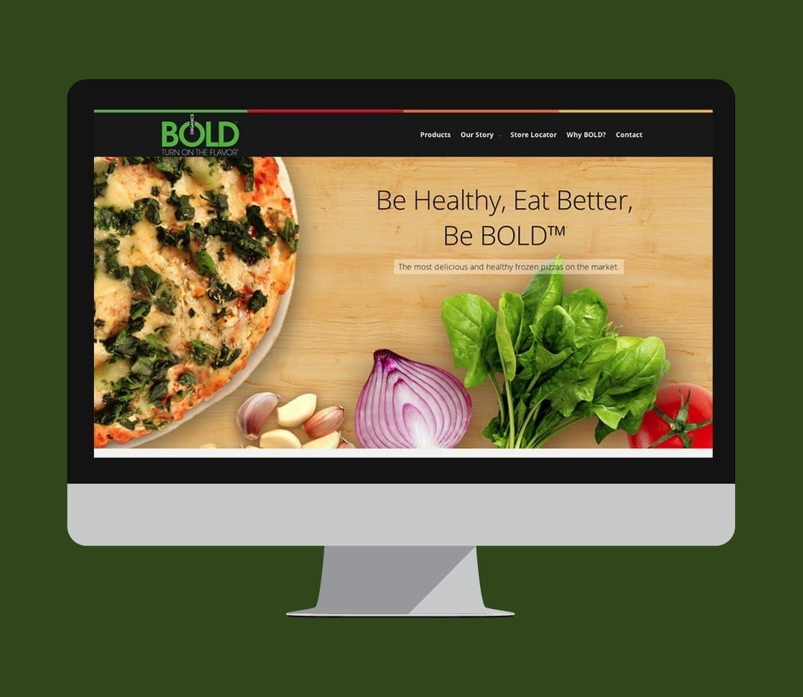
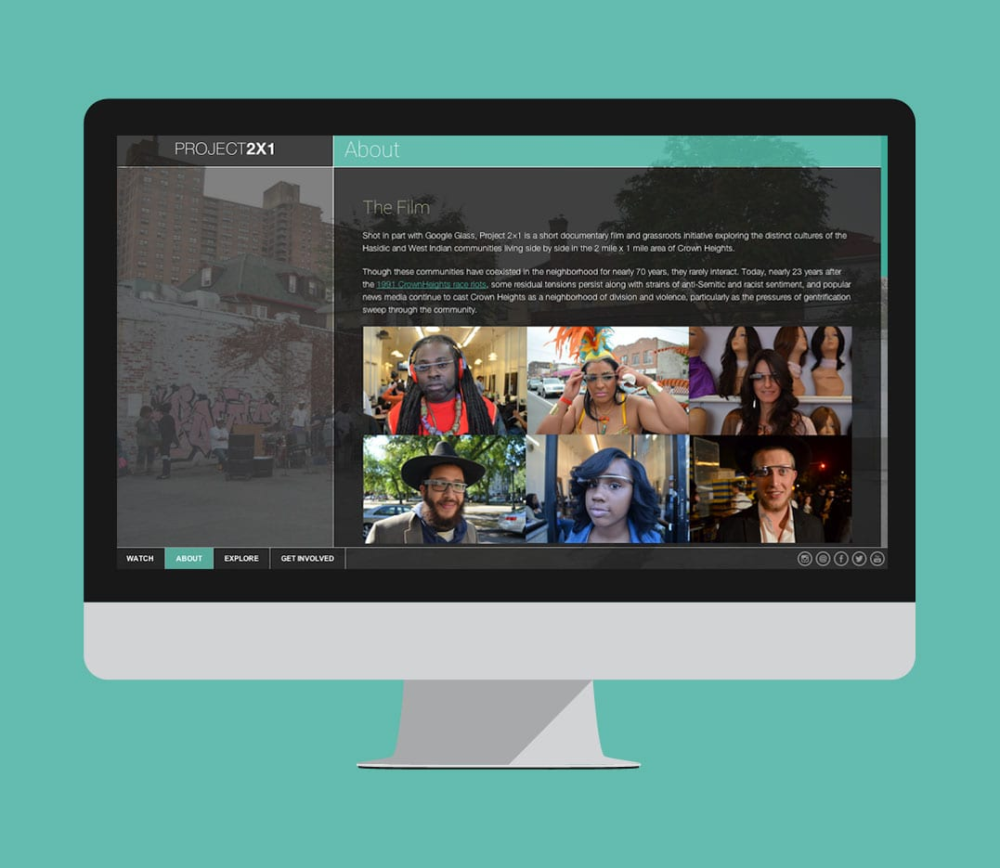
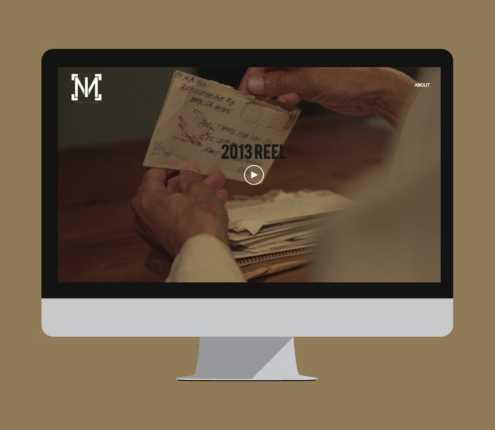
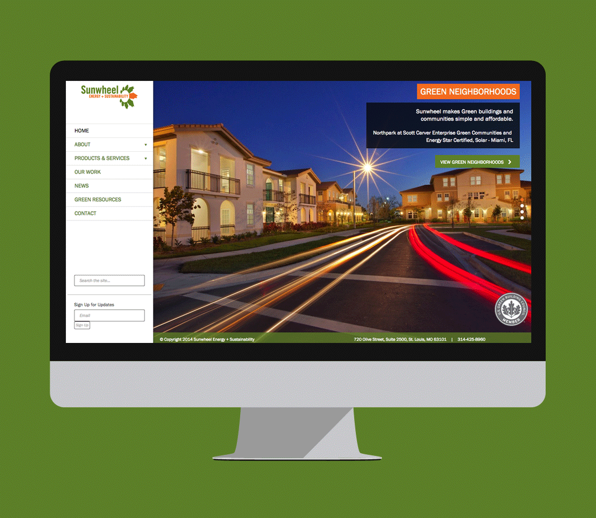
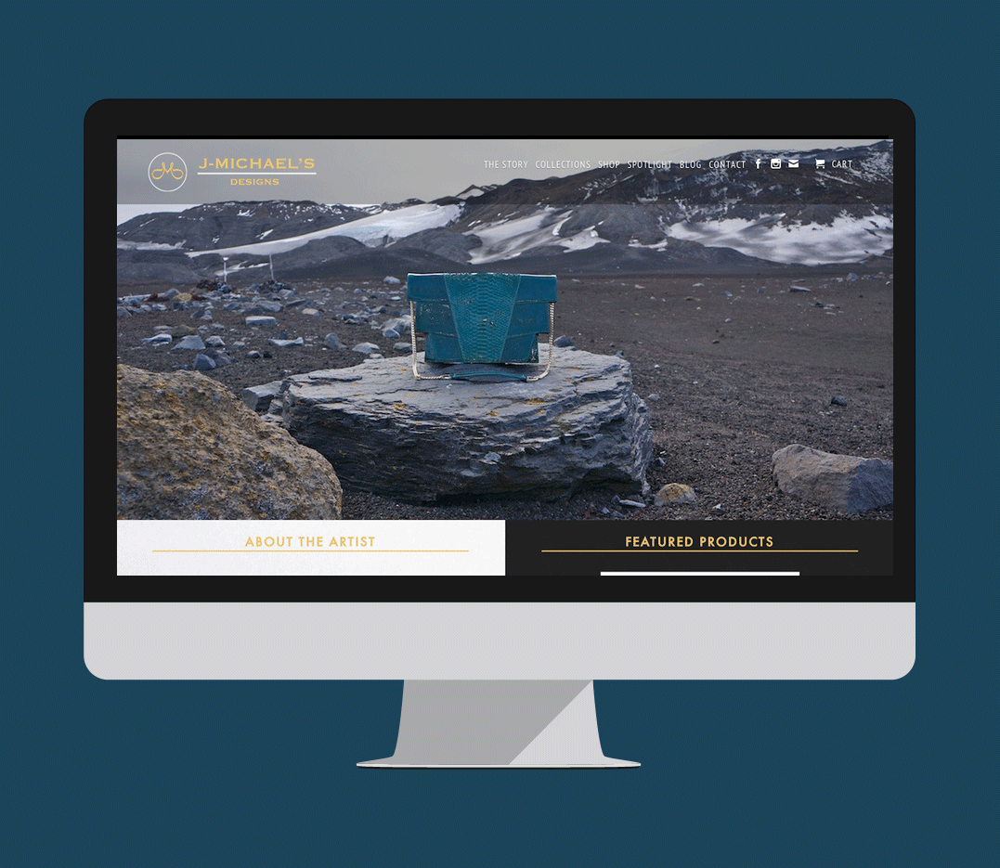

I work with individuals and brands to plan, design and develop websites. I also serve as a strategic partner for your brand. Working with you to create new ideas that engage audiences and push your brand forward. If you need a website please contact me at celso@celsowhite.com.
Welcome.US | Non-Profit
Welcome US is the official site for Immigrant Heritage Month. The site tells the immigration stories of Americans. I was the developer on the project. Building the functionality to compile both curated stories and stories shared through social media and the ability for people to share their own stories. Project lead and designed by verynice. View Welcome.US
The Water Trust | Non-Profit
The Water Trust is a non-profit that creates water, sanitation and hygiene systems in East Africa. I designed and developed a website that helps the orginzation better connect with donors, shares real-time updates for their projects, and gives a vivid lens into the lives of the communities they effect. View The Water Trust
PBS | Media
America by The Numbers is a new PBS documentary series. I helped create an online experience to share stories and facts from the show. The new website also reflects the unique character the series brings to PBS. View America By The Numbers
HUMAN | Agency
HUMAN is a storytelling and strategy agency that creates incredible media pieces for social impact. I developed a site to showcase their work and refresh their digital presence. Capturing the essence of the agency and their new service offerings. View HUMAN
Bold Organics | Business
Bold Organics is one of the top producers of gluten-free pizza in the world. I helped refine and adapt their digital presence to include a new organic pizza line and attract new consumers. View Bold Organics
Project 2x1 | Media
Project 2x1 is a documentary film that needed an interactive website to complement its launch. I designed and built a site that allowed the film’s viewers to truly immerse themselves in the experience and environement of the film’s subject. View Project 2x1
Ian Moubayed | Portfolio
Ian Moubayed's is a filmmaker whose work is intimate and moving. I designed and built his site to match the clear, emotional impact of his films. View Ian Moubayed
Sunwheel Energy | Business
Sunwheel energy is a solar energy and sustainability company. I assisted in crafting the user experience and lead development for the project. Project lead and designer: Rori Spivey View Sunwheel Energy
J-Michael's Designs | E-commerce
Jason Michael creates unique handbags and accesories. I created an online store to launch the e-commerce component of his business and to help attract a larger audience. View J-Michael's Designs